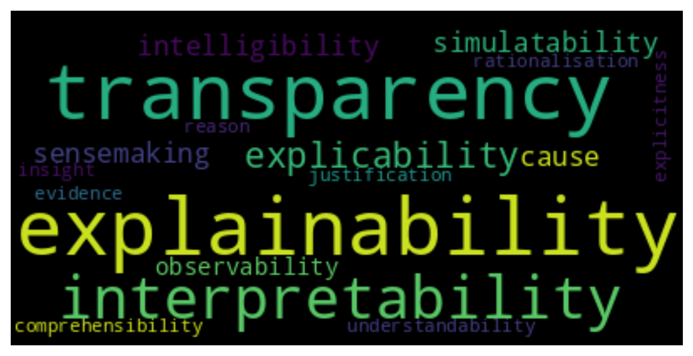
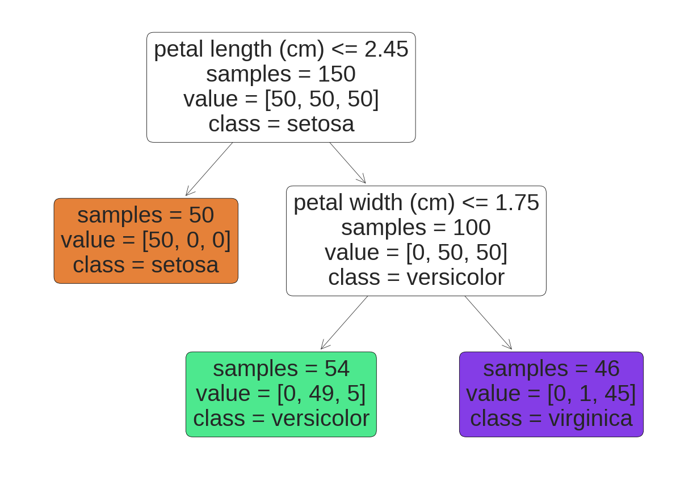
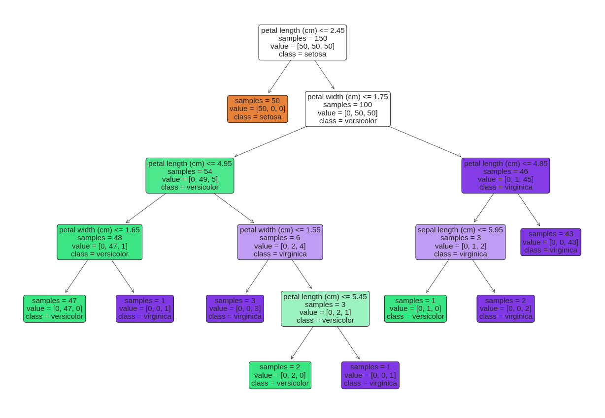

Defining Explainability
Kacper Sokol
Nomenclature
Black Box
A system or automated process whose internal workings are opaque to the observer – its operation may only be traced by analysing its behaviour through its inputs and outputs
Black Box
Sources of opaqueness:
- a proprietary system, which may be transparent to its creators, but operates as a black box
- a system that is too complex to be comprehend by any human
Black Box
Spectrum of opaqueness determined by the context (audience, purpose, etc.)

Transparency, Interpretability, Explainability, …
Transparency, Interpretability, Explainability, …
- explainability
- intelligibility
- simulatability
- sensemaking
- cause
- observability
- comprehensibility
- explicitness
- insight
- transparency
- understandability
- justification
- evidence
- explicability
- interpretability
- rationalisation
- reason
What Is Explainability?
Lack of a universally accepted definition
Interpretability is the degree to which a human can understand the cause of a decision
Explanation is an answer to a “Why?” question
Lack of a universally accepted definition
Explanations should answer “Why?” and “Why-should?” questions until such questions can no longer be asked
Lack of a universally accepted definition
Explanations “giv[e] a reason for a prediction” and answer “how a system arrives at its prediction”
Justifications “put an explanation in a context” and convey “why we should believe that the prediction is correct”
Lack of a universally accepted definition
Transparency is a passive characteristic of a model that allows humans to make sense of it on different levels
Explainability is an active characteristic of a model that is achieved through actions and procedures employed (by the model) to clarify its functioning for a certain audience
Lack of a universally accepted definition
Interpretability is the degree to which a human can consistently predict the model’s result
Lack of a universally accepted definition
Transparency is the ability of a human to comprehend the (ante-hoc) mechanism employed by a predictive model on three levels
- decomposability – appreciation of individual components (input, parameterisation and computation) that constitute a predictive system
- algorithmic transparency – understanding the modelling process embodied by a predictive algorithm
- simulatability enables humans to simulate a decisive process in vivo at the level of the entire model
Lack of a universally accepted definition
Marr’s three-level hierarchy of understanding information processing devices
- computational theory – abstract specification of the problem at hand and the overall goal.
- representation and algorithm – implementation details and selection of an appropriate representation
- hardware implementation – physical realisation of the explained problem
Lack of a universally accepted definition
Understanding why birds fly cannot be achieved by only studying their feathers:
In order to understand bird flight, we have to understand aerodynamics; only then do the structure of feathers and the different shapes of birds’ wings make sense.
Lack of a universally accepted definition
Fidelity-based understanding
- completeness – how truthful the understanding is overall (generality)
- soundness – how accurate the understanding is for a particular phenomenon (specificity)
Lack of a universally accepted definition
Mental models withing the completeness–soundness landscape
- functional – operationalisation without understanding
- structural – appreciation of the underlying mechanism
Approaches to defining XML concepts
- no definition
- inherently intuitive – You know it when you see it!
- assuming terms are synonymous
Approaches to defining XML concepts
circular or tautological definitions
- “something is explainable when we can interpret it”
- “interpretability is making sense of ML models”
- “interpretable systems are explainable if their operations can be understood by humans”
- “intelligibility is the possibility to comprehended something”
dictionary definitions
- to interpret is “to explain […] the meaning of”
- to explain is to “present in understandable terms”
Approaches to defining XML concepts
hierarchical and ontological definitions
- creating a web of connections
component-based – pairings between keywords and technical component or properties
- data are understandable; models are transparent; predictions are explainable
- interpretability is determined by fidelity, brevity and relevance of the insights
Defining Explainability
Human-agnostic definitions
- (technical) desiderata of explainers
- (abstract) properties of explanations
Human-centred definitions
- the role and needs of (human) explainees
- the goal of explanations (with respect to explainees)
Terminology & Key Concepts
- Transparency – insight (of arbitrary complexity) into operation of a system
- Background Knowledge – implicit or explicit exogenous information encompassing (operational) context such as application area, stakeholder and audience (domain expertise)
- Reasoning – algorithmic or mental processing of information
Definition
\[ \texttt{Explainability} \; = \] \[ \underbrace{ \texttt{Reasoning} \left( \texttt{Transparency} \; | \; \texttt{Background Knowledge} \right)}_{\textit{understanding}} \]
Goal
Explainability → explainee walking away with understanding
Understanding, explainability & transparency
A continuous spectrum rather than a binary property
Examples
Linear Models
\[ f(\mathbf{x}) = 0.2 \;\; + \;\; 0.25 \times x_1 \;\; + \;\; 0.7 \times x_4 \;\; - \;\; 0.2 \times x_5 \;\; - \;\; 0.9 \times x_7 \]
\[ \mathbf{x} = (0.4, \ldots, 1, \frac{1}{2}, \ldots \frac{1}{3}) \]
\[ f(\mathbf{x}) = 0.2 \;\; \underbrace{+0.1}_{x_1} \;\; \underbrace{+0.7}_{x_4} \;\; \underbrace{-0.1}_{x_5} \;\; \underbrace{-0.3}_{x_7} \;\; = \;\; 0.6 \]
Linear Models

Linear Models

Decision Trees

Decision Trees

Wrap Up
Summary
- Explainability is an elusive concept
- Its definition relies on the broadly-understood context
- It should be human-centred and goal-driven
- It should lead to understanding
Bibliography
Arrieta, Alejandro Barredo, Natalia Dı́az-Rodrı́guez, Javier Del Ser, Adrien Bennetot, Siham Tabik, Alberto Barbado, Salvador Garcı́a, et al. 2020. “Explainable Artificial Intelligence (XAI): Concepts, Taxonomies, Opportunities and Challenges Toward Responsible AI.” Information Fusion 58: 82–115.
Bell, Andrew, Ian Solano-Kamaiko, Oded Nov, and Julia Stoyanovich. 2022. “It’s Just Not That Simple: An Empirical Study of the Accuracy-Explainability Trade-Off in Machine Learning for Public Policy.” In 2022 ACM Conference on Fairness, Accountability, and Transparency, 248–66.
Biran, Or, and Courtenay Cotton. 2017. “Explanation and Justification in Machine Learning: A Survey.” In IJCAI-17 Workshop on Explainable AI (XAI), 8:8–13. 1.
Biran, Or, and Kathleen McKeown. 2014. “Justification Narratives for Individual Classifications.” In Proceedings of the AutoML Workshop at ICML, 2014:1–7.
Gilpin, Leilani H, David Bau, Ben Z Yuan, Ayesha Bajwa, Michael Specter, and Lalana Kagal. 2018. “Explaining Explanations: An Overview of Interpretability of Machine Learning.” In 2018 IEEE 5th International Conference on Data Science and Advanced Analytics (DSAA), 80–89. IEEE.
Kim, Been, Rajiv Khanna, and Oluwasanmi O Koyejo. 2016. “Examples Are Not Enough, Learn to Criticize! Criticism for Interpretability.” In Advances in Neural Information Processing Systems, 2280–88.
Kulesza, Todd, Simone Stumpf, Margaret Burnett, Sherry Yang, Irwin Kwan, and Weng-Keen Wong. 2013. “Too Much, Too Little, or Just Right? Ways Explanations Impact End Users’ Mental Models.” In Visual Languages and Human-Centric Computing (VL/HCC), 2013 IEEE Symposium on, 3–10. IEEE.
Lipton, Zachary C. 2018. “The Mythos of Model Interpretability.” Communications of the ACM 16 (3): 30:31–57. https://doi.org/10.1145/3236386.3241340.
Marr, David. 1982. Vision: A Computational Investigation into the Human Representation and Processing of Visual Information. The MIT Press.
Miller, Tim. 2019. “Explanation in Artificial Intelligence: Insights from the Social Sciences.” Artificial Intelligence 267: 1–38.
Rudin, Cynthia. 2019. “Stop Explaining Black Box Machine Learning Models for High Stakes Decisions and Use Interpretable Models Instead.” Nature Machine Intelligence 1 (5): 206–15.
Searle, John R. 1980. “Minds, Brains, and Programs.” Behavioral and Brain Sciences 3 (3): 417–24.
Sokol, Kacper, and Peter Flach. 2021. “Explainability Is in the Mind of the Beholder: Establishing the Foundations of Explainable Artificial Intelligence.” arXiv Preprint arXiv:2112.14466.
Questions